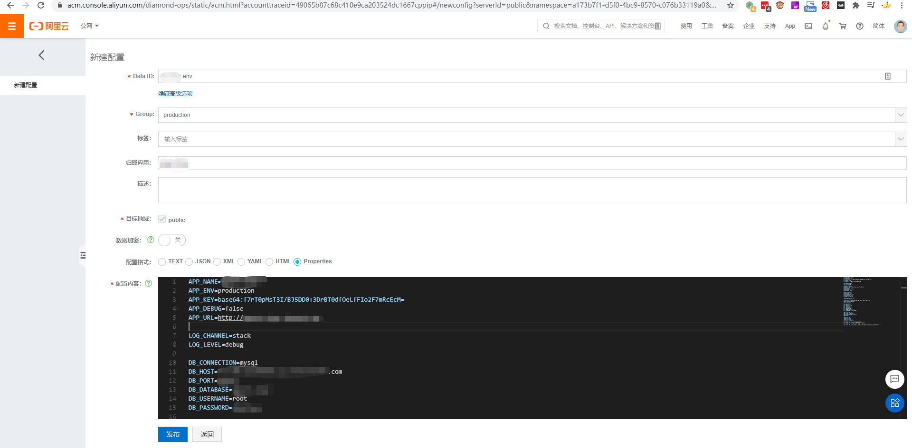
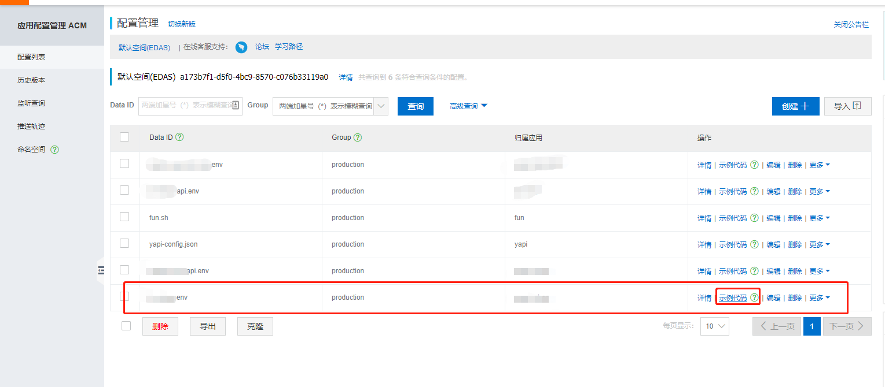
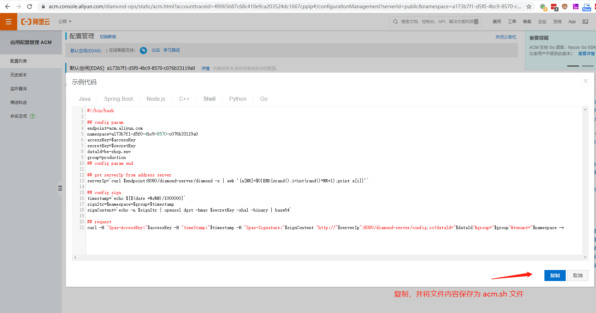
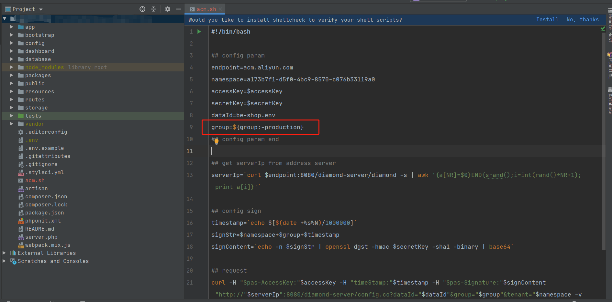
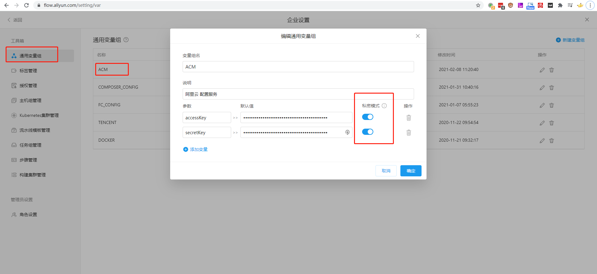
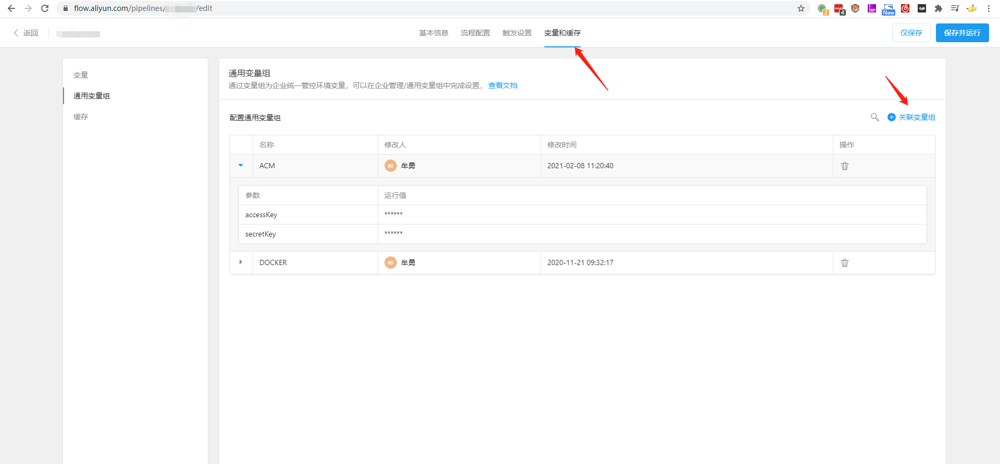
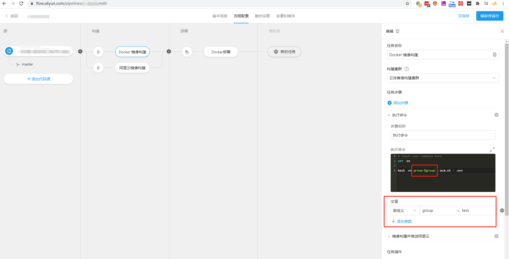

应用配置管理 ACM
登录控制台，选择合适的地域
控制台：https://acm.console.aliyun.com/
新增配置
点击配置列表->创建，进入配置新增页。
注: 点击“显示高级选项”，便于更好的进行配置管理与归类。
字段说明
Data ID: 配置名 (需要唯一，示例：blog.env、config.json)
Group: 配置分组 (可自定义自己习惯的分组方式，示例：production、test)
归属应用: 应用名 (建议填写)
数据加密: 保持关闭即可
配置格式: 高亮作用。保持默认即可
配置内容: 项目的配置内容
示例

发布配置
点击发布，提示新建配置成功后。即可点击菜单栏的返回，在列表中看到新增的配置。

点击示例代码，根据需要选择项目获取配置文件的方式。推荐使用 shell，项目语言依赖较小。

点击复制，将复制的内容保存到项目根目录下 acm.sh 文件中。此脚本用于下载配置文件到项目中。
对脚本内容做修改，group=production 改为 group=${group:-production}。后续可以通过变量 group 控制要同步的配置文件。
-group=production
+group=${group:-production}
下载配置文件（可将 accessKey、secretKey 保存在环境变量中）
production: bash -ex group=production accessKey=$accessKey secretKey=$secretKey ./acm.sh > .env
test: bash -ex group=test accessKey=$accessKey secretKey=$secretKey ./acm.sh > .env
下一步
本地调试可以下载到配置文件后。便可以在 devops 流程中集成了。
推荐使用“云效 Flow · 企业级研发交付流水线”。
在“设置->通用变量组”中，配置 ACM 的 ak、sk

在流水线“编辑->变量和缓存->通用变量组”中关联配置变量。

在“流水线->步骤”中控制要同步的配置文件
